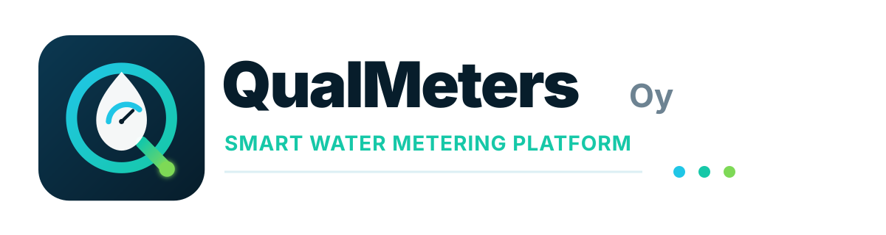
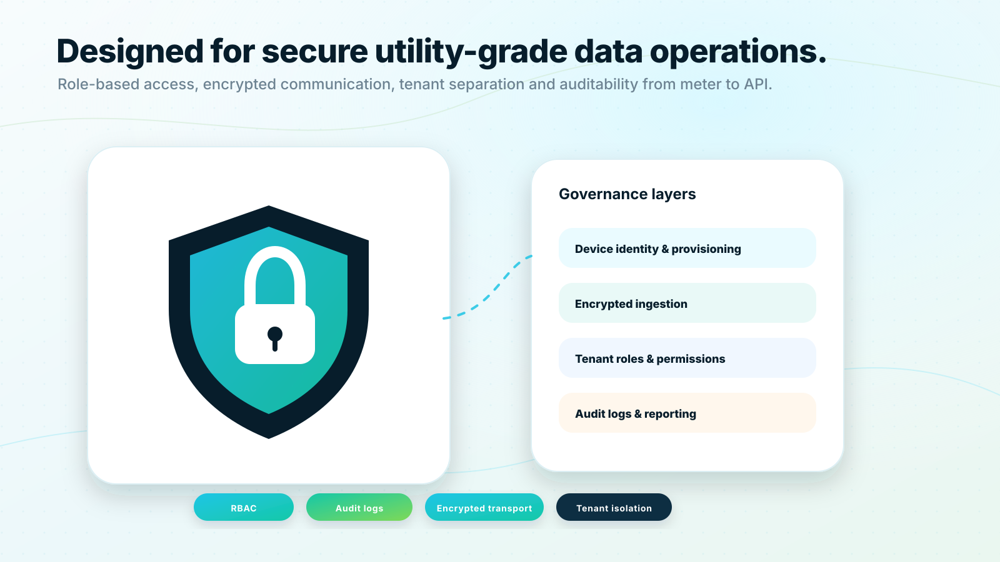
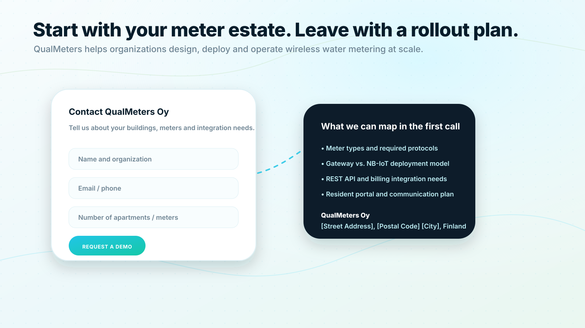

Encrypt data in transit:
Gateway and NB-IoT ingestion should use secure transport.

Request a demoSecurity and data governance
QualMeters should protect meter data from the device layer to dashboards and APIs. The platform is specified around encrypted communication, role-based access, tenant separation, audit logs and privacy-aware resident features.

Security and governance
Gateway and NB-IoT ingestion should use secure transport.
Each organization sees only its authorized meters, apartments and properties.
Roles should define what residents, property managers, municipal users, support teams and administrators can see.
Log API access, account changes, device changes and data export activity.
Store only what is needed for the service and resident experience.
Use aggregated peer groups and privacy thresholds before showing benchmark data.
Security and governance
QR-based access is user-friendly, but production systems should protect against guessing and misuse. Recommended safeguards include rate limiting, temporary access tokens, confirmation of current visible reading, optional resident account creation, property manager-controlled invitations and logging of access attempts.
Security and governance
Sales consultation
Share your building type, meter count, communication requirements and integration needs. QualMeters will help you map the right deployment model and next steps.
No obligation. We will start by understanding your existing meters, buildings and goals.

Request a demo